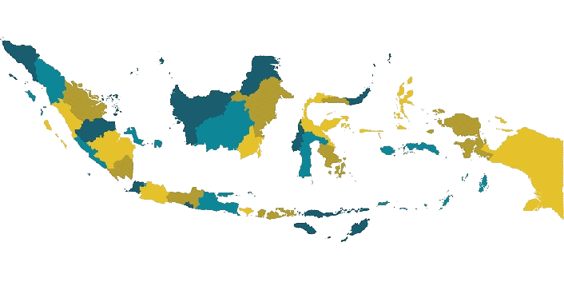

INDONESIA merupakan negara terluas ke-14 sekaligus negara kepulauan terbesar
di dunia dengan luas wilayah sebesar 1.904.569 km² dan berada di antara daratan benua Asia dan Oseania.
Karenanya, Indonesia dikenal sebagai negara lintas benua serta antara Samudra Pasifik dan Samudra Hindia. Dari belasan ribu pulau yang ada di Indoensia,
Mari kita mulai kenali dahulu 5 Pulau terbesarnya.